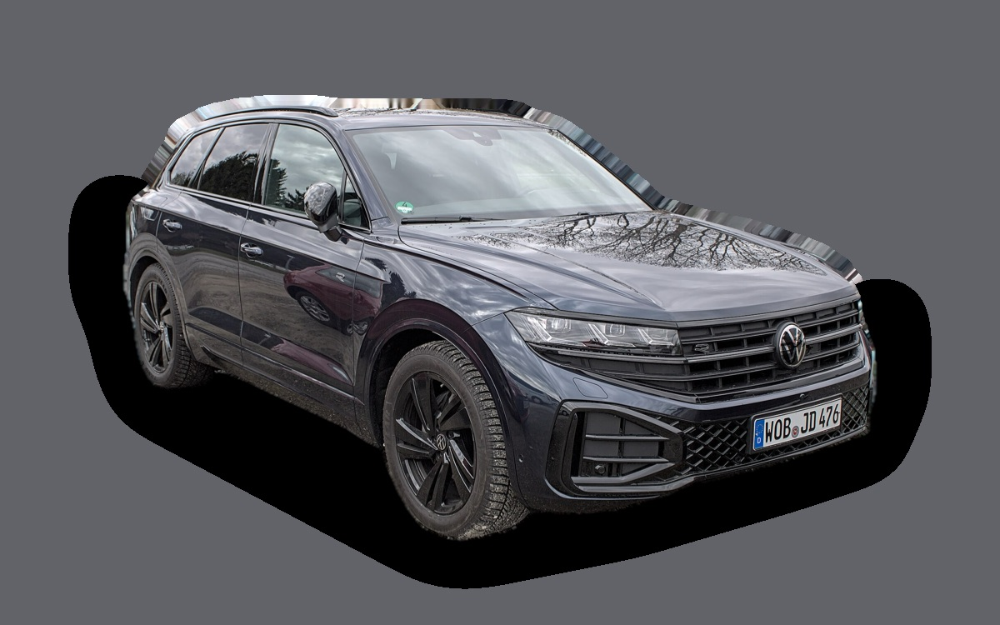
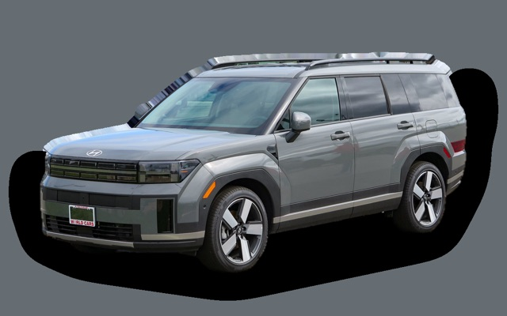
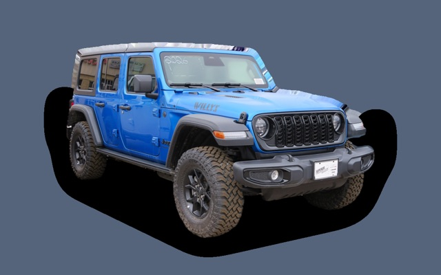
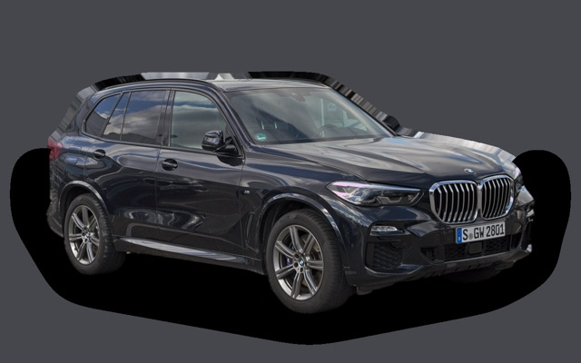

Vad kostar en Volkswagen Touareg per månad?
En Volkswagen Touareg från 2023 kostar cirka 7 635 kr i månaden, allt inräknat.
7 635 krper månad, årsmodell 2023
524 000 krpris, årsmodell 2023
774 900 krnypris från
Cprisvärdhetsbetyg (2023)

_IMG_8455.jpg){kind=link}
Månadskostnad per årsmodell
| Årsmodell | Version i beräkningen | Pris | Per månad | Betyg |
|---|---|---|---|---|
| 2026 | V6 TDI 286 4MOTION, Elegance | 774 900 kr | 10 892 kr | D |
| 2023 | V6 TDI 286 4MOTION, Elegance | 524 000 kr | 7 635 kr | C |
| 2020 | V6 TDI 286 4MOTION, Elegance | 384 000 kr | 6 591 kr | C |
Räknat på 5 års ägande och 1 250 mil per år, med bränslepriser från 2026-10-22. Månadskostnaden innehåller värdeminskning, drivmedel, service och reparationer, försäkring och fordonsskatt.
Så fördelas kostnaden för en 2023:a
- Värdeminskning: 3 341 kr/mån
- Drivmedel: 2 260 kr/mån
- Service och reparationer: 813 kr/mån
- Försäkring: 754 kr/mån
- Fordonsskatt: 467 kr/mån
Begagnatpriser i annonser
| Årsmodell | Medianpris | Annonser | Typiskt miltal |
|---|---|---|---|
| 2026 | 799 900 kr | 4 | 1 100 mil |
| 2025 | 789 500 kr | 5 | 3 100 mil |
| 2024 | 699 900 kr | 23 | 5 400 mil |
| 2023 | 629 500 kr | 21 | 7 500 mil |
| 2022 | 514 400 kr | 10 | 10 000 mil |
| 2021 | 447 900 kr | 14 | 13 400 mil |
| 2020 | 459 900 kr | 5 | 14 000 mil |
| 2019 | 379 900 kr | 13 | 14 400 mil |
| 2018 | 374 400 kr | 16 | 14 900 mil |
Medianpriset i svenska annonser per årsmodell i oktober 2026 (källa: Blocket, AutoUncle, BilKoll). Annonspriser är utgångspriser, och slutpriset kan bli lägre.
Motorer och versioner
| Motor | Drivmedel | Effekt | 0–100 km/h | Förbrukning (WLTP) | Räckvidd | Årsmodeller | Pristillägg |
|---|---|---|---|---|---|---|---|
| V6 TDI 286 4MOTION | Diesel | 286 hk | 6,1 s | 7,9 l/100 km | – | från 2018 | – |
| eHybrid 381 | Laddhybrid | 381 hk | 5,9 s | 2,6 l/100 km + 24 kWh/100 km | – | från 2021 | +60 000 kr |
| R eHybrid 462 | Laddhybrid | 462 hk | 5,1 s | 2,6 l/100 km + 25 kWh/100 km | – | från 2021 | +260 000 kr |
- Utrustning: Elegance, R-Line (+40 000 kr)
Fakta
- Kaross
- SUV
- Årsmodeller
- sedan 2018
- Nypris från
- 774 900 kr
- Bagage
- 810 liter
- Euro NCAP
- 5 av 5 stjärnor
- Nybilsgaranti
- 3 år
- Driftsäkerhet
- 4,5 av 5
- Helförsäkring, uppskattning
- 11 900 kr/år
- Service, uppskattning
- 6 200 kr/år
Vanliga fel att ha koll på
- EGR och partikelfilter (TDI), reparation cirka 9 000 kr
- Luftfjädring, reparation cirka 12 000 kr
Felen gäller vissa motorer och årsmodeller. I kalkylatorn räknas risken för just den version du väljer.
Fördelar och nackdelar
Fördel
Stor och bekväm dragbil med hög komfort.
Nackdel
Dyr och hög förbrukning med diesel.
Liknande bilar

Hyundai Santa Fe7 635 kr/mån som 2026:a
Jeep Wrangler Rubicon8 012 kr/mån som 2023:a
BMW X58 245 kr/mån som 2023:a Volkswagen Tiguan6 971 kr/mån som 2026:a
Volkswagen Tiguan6 971 kr/mån som 2026:a Volvo XC906 885 kr/mån som 2023:a
Volvo XC906 885 kr/mån som 2023:a Peugeot 30086 424 kr/mån som 2026:a
Peugeot 30086 424 kr/mån som 2026:a
Uppdaterad 2026-10-26 · annonsdata okt 2026